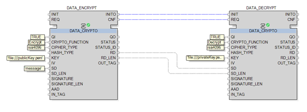
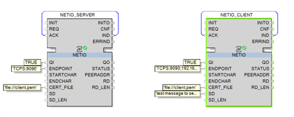

Find next the different ways to send secured confidential data with a Soft dPAC device:
For encrypting data using the DATA_CRYPTO function block, the user needs to create: a public and a private key file.
A public key file: It is only capable of encrypting data. This can be shared to all the users and devices that need to encrypt data.
A private key file: It must only be used by the users and devices that will decrypt said data.
| CAUTION | |
|---|---|
To create the public and private key file and to configure the DATA_CRYPTO function block, follow the next steps:
Create the private key file:
openssl genrsa -out privateKey.pem 4096
Symmetric cryptography with AES128–256
HMAC integrity protection
Asymmetric encryption with RSA
Asymmetric integrity protection with EDSA
The chosen algorithm depends on if integrity or confidentiality is required and if the performance or the strength of cryptography is required.
Create the public key file from the private one:
openssl rsa -in privateKey.pem -pubout > publicKey.pem
Copy the public key on the Soft dPAC devices that will encrypt data:
docker cp publicKey.pem Softdpac_1:/var/lib/nxtSRT61499N/data/auth
Softdpac_1 by the name of your Soft dPAC device.
Copy the private key on the Soft dPAC devices that will decrypt data:
docker cp privateKey.pem Softdpac_1:/var/lib/nxtSRT61499N/data/auth
Softdpac_1 by the name of your Soft dPAC device.
Next, when using the DATA_CRYPTO function block, you can use the public and private key files to encrypt and decrypt data:

To secure communication between two NETIO function blocks, each Soft dPAC device needs to have the same certificate in their respective containers.
To do so, follow the next steps for every Soft dPAC devices using the NETIO function block with secured communication:
Create one self signed certificate.
NETIO function block needs a PEM certificate that includes both the certificate and key information. For this, you need to append both crt and key files into one single PEM file.
In Linux:
cat client.crt client.key > client.pem
In Windows: Open the crt and key file using a note editor and append both files manually in a new file (e.g. client.pem).
Copy the pem file into all Soft dPAC containers:
docker cp client.pem Softdpac_1:/var/lib/nxtSRT61499N/data/auth
client.pem by the name of your recently created pem file and Softdpac_1 by the name of your Soft dPAC device.
Next, you can use the NETIO function block to create a secured communication between all devices as shown in the image below.

Here:
The NETIO_SERVER function block is deployed on one device and is running as a server.
The NETIO_CLIENT function block is deployed on a different device and is running as a client pointing at the IP address of the server.
MQTT is increasingly being used in SCADA systems as an alternative to protocols like DNP3. In this architecture, use MQTT only in L1-Control, between L1-Control and L2-L3 Operations. If used between zones, apply firewall rules that prevent access to MQTT outside of those networks. MQTT Enterprise applications must be hosted at L1, L2 or L3. Further information on configuring MQTT can be found in:
MQTT broker configuration and certificate management in the MQTT chapter from the EcoStruxure Automation Expert - User Manual
The function block used for the MQTT secured communication in the MQTT_CONNECTION documentation in the Runtime.Library documentation.